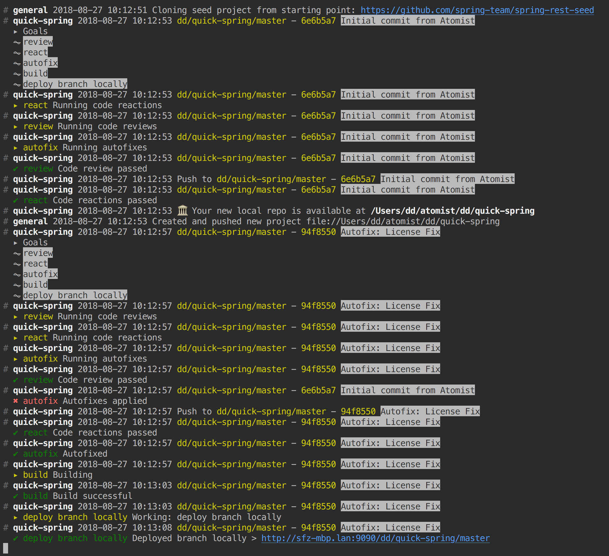
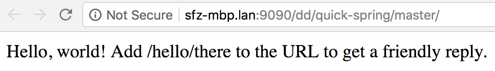
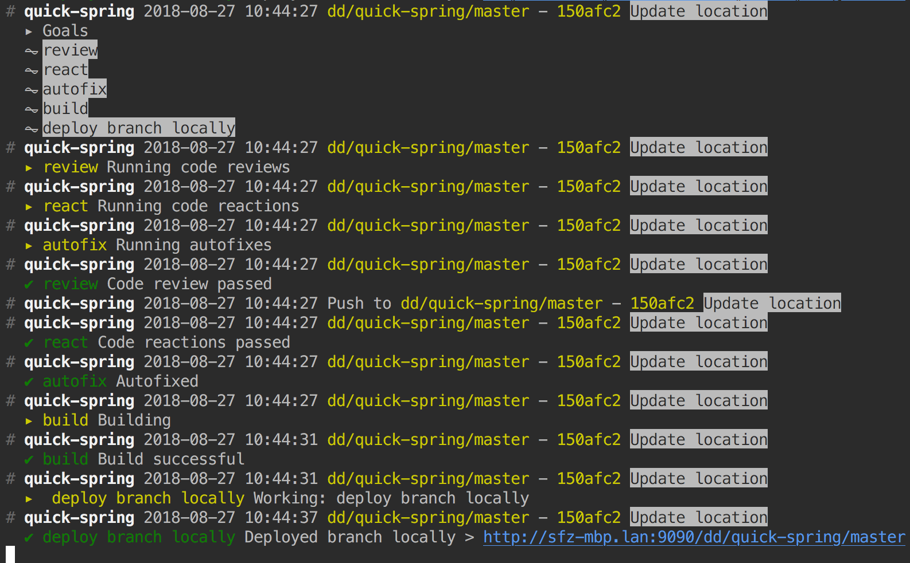
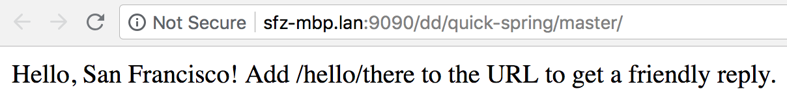

Developer Quick Start
This page shows you how to start building your own development automations using Atomist. Use this to explore, whether or not you have access to the Atomist service, and whether or not your team has other SDMs running.
The easiest way to get started with Atomist is to work on your laptop in local mode. You will create your own software delivery machine, use it, and then customize it, all in the privacy of your machine. Later, you can connect your SDM to the Atomist service, and then it will work with your team’s version control and chat.
An Atomist SDM can run any delivery process, and many other things besides–but for exploration we have to start somewhere. Let’s pretend your team operates several web services, you write them in Java using Spring Boot, and you like build them with maven. Since this SDM is for your personal use on your laptop, “deployment” means starting the service up locally.
We are going to create a new SDM project, build it, run it, and then use it: we will create a new Spring web service, make commits to it, and see it deployed.
You’ll need Git, Node.js (this comes with npm), and
the Java JDK installed. Run the listed commands in a terminal
on Mac or Linux, or in Bash on Windows (git-bash, cygwin, or turn on
bash support).
Quick start
-
Install the Atomist command-line utility. We will use this to create a new SDM project and to start it up. Using Homebrew on macOS:
brew install atomist-cli
On other platforms, install Node.js and then run:
npm install -g @atomist/cli
-
Create a local software delivery machine (SDM). This is going to create a new project in the Atomist projects directory (which defaults to
$HOME/atomist/projects).atomist create sdm
Select the default machine,
spring. When prompted for the name of the target repository, enterquick-sdm. When prompted for a target owner, enter your user name (on GitHub or anywhere).The output of this command includes the newly created file directory. In that directory,
-
Change into the newly created SDM project.
cd $HOME/atomist/projects/<target owner>/quick-sdm
-
Start your local SDM.
npm install atomist start --local
The above command will install the project dependencies using npm, compile the TypeScript, and start your SDM. Depending on your network connection, this may take a minute or more.
Leave this terminal window open. Logs will print to this screen.
-
In another terminal, check what your SDM can do. This will print a list of commands supported by your running quick-sdm.
atomist show skills
-
Start up the SDM feed so you can see what the SDM is doing.
atomist feed
Leave this terminal window open. Messages will print here.
-
Now it is time to use your SDM. While it is running, the atomist command line utility can send your commands to it.
In another terminal, create a Spring Boot project.
atomist create spring
This command will connect to your locally running SDM and use its capabilities to create a new Spring Boot project for you. When prompted for the target repository, enter
quick-spring. When prompted for group identifier and root package, entercom.meandcom.me.spring, respectively. (These are maven concepts.) When prompted for the target owner, enter your user name again.If you look in the terminal with the Atomist feed, you will see the SDM cloning the seed repository, cloning it locally, building it, and deploying it locally. The first time you run this, it may take a few minutes as it downloads all the Maven and project dependencies.

You can go to the URL provided for the local deployment and verify that your new Spring Boot application is running.

-
Move into your newly created Spring Boot project.
cd ~/atomist/<your user name>/quick-spring
-
Change the message in your Spring Boot application. Edit
src/main/java/com/me/spring/QuickSpringController.java, changing “world” to your location. Then commit your change.git add src/main/java/com/me/spring/QuickSpringController.java git commit -m 'Update location'
-
Go back to the Atomist feed to observe your locally running SDM noticing your commit and respond by building and deploying your latest version.

Go to the URL again and verify the message contains your location.

Next steps
Find many things you can do with an SDM in the Developer Guide.
When you’re ready to put your SDM to work for your whole team, continue with setup.